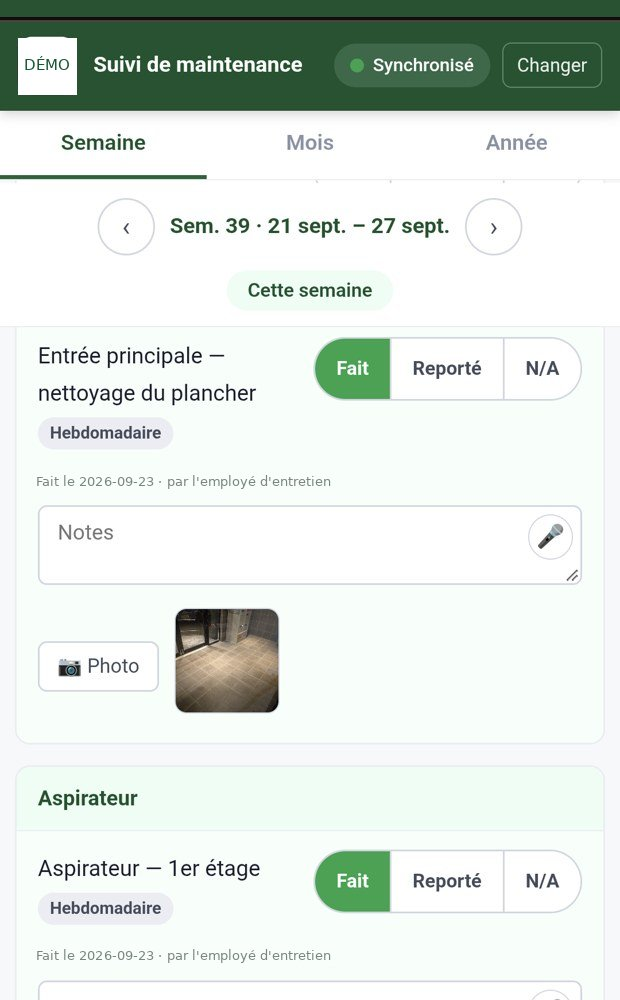
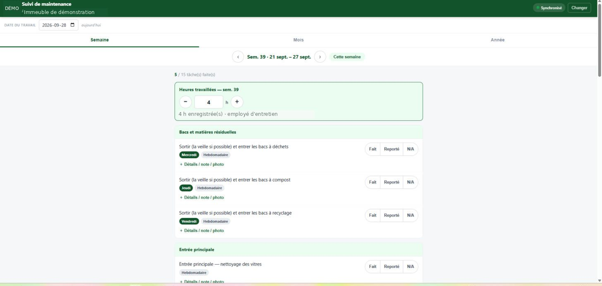
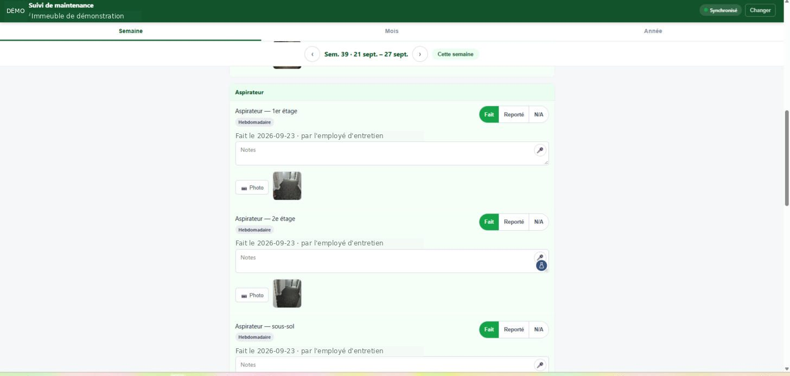
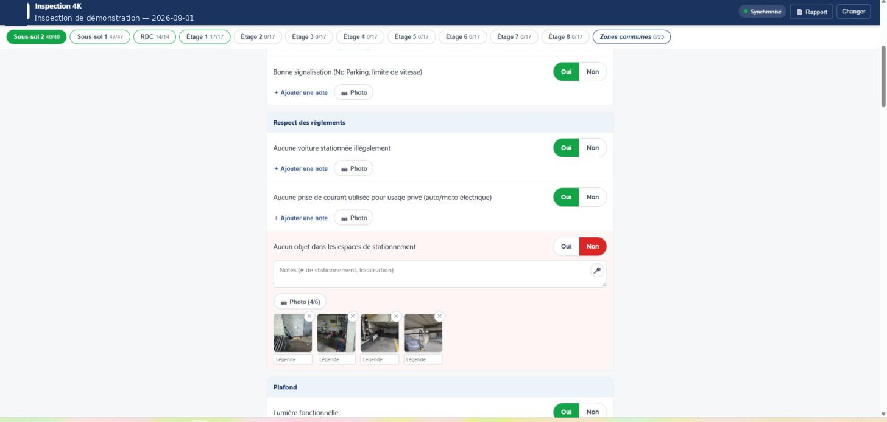
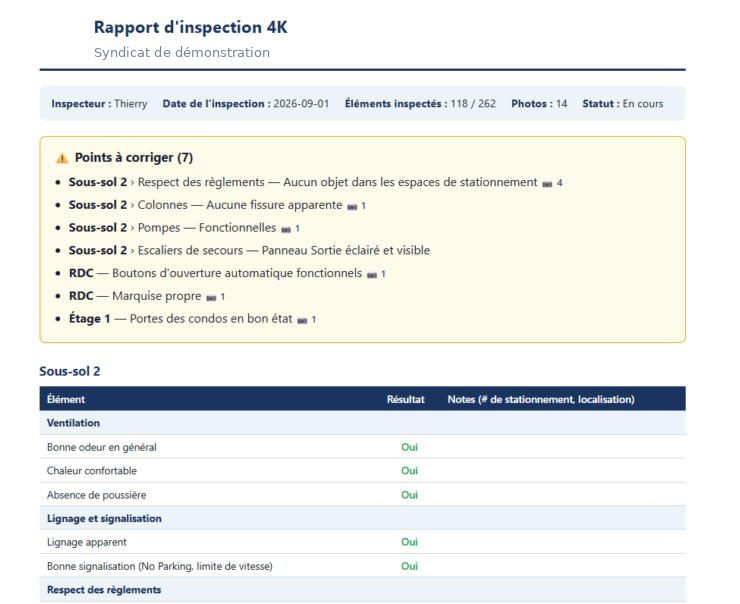
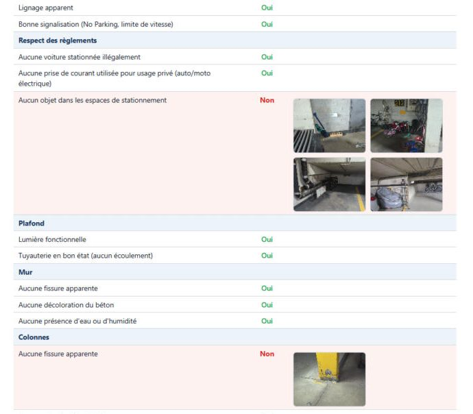
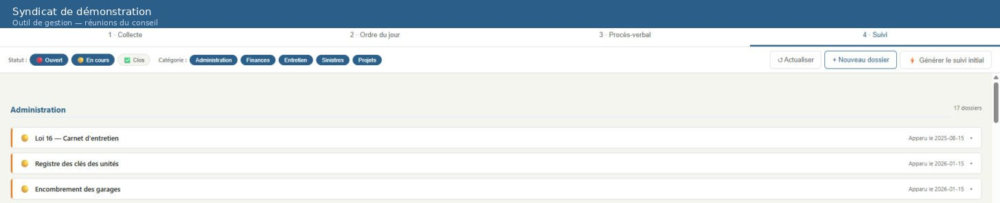

Instructional designer and e-learning developer. More than 25 years in training, including six with the claims adjusters of a major property and casualty insurer.
The training I designed for my employers belongs to them and cannot be shared. The pieces below were therefore created for this portfolio, on fictitious cases, using the same working methods.
Piece 1 · interactive module
Water Loss at Le Mérisier
A playable scenario in which learners investigate before they decide. A water loss in a condominium: who pays for what, and is it worth the syndicate's while to file a claim?
Claims adjusters know condominium theory, but they often decide too early, before obtaining the documents that hold the answer. Training that explains the rule does not fix that. Training that makes them decide with an incomplete file does.
Mechanics
Open-ended investigation. Six contacts, reachable by phone or by email. A call gets an answer right away but nothing in writing; an email brings back documents, but costs a day.
A living file. Replies stack up in a thread, and the documents obtained can be opened: declaration of co-ownership, schedule describing the standard unit, insurance policies, site report, repair estimate.
Drag-and-drop decision, followed by two questions on the deductible. The deductible changes with every attempt: it cannot be answered without reading the policy.
Debrief assembled from the learner's path. No feedback reveals information the learner did not ask for. Their steps are counted and compared with the minimum required.
Design sheet
Audience
Claims adjusters, property damage
Objectives
Choose whom to contact; tell common portions, the standard unit and betterments apart; allocate the damage; determine whether the syndicate's share exceeds its deductible
Duration
12 to 18 minutes, depending on the number of steps taken
Strategy
Learning through investigation and decision, with delayed feedback to prevent trial-and-error answers
Production
HTML and JavaScript, built through vibe coding with an AI coding agent; no dependencies, works on a phone
Variant
The deductible is drawn at random on each attempt, which makes the module replayable and keeps colleagues from passing the answer along
Piece 2 · production document
The storyboard behind the module
What I hand over to a development team: one block per screen, on-screen text, narration with audio file names, positive and negative feedback kept separate, and a column for actions and branching.
It also contains the general guidelines — menu, structure, characters, glossary, variables — and the table of expected answers with the amounts. It is the document that lets someone other than me build the module.
Piece 3 · bilingualism
The module in two languages
The scenario, the objectives and two pieces of feedback, in French and English side by side, followed by a record of the terminology choices.
This is where reviewing an insurance translation really happens: franchise becomes deductible, not franchise; amélioration becomes betterment; parties communes becomes common portions, not common areas. I deliver this record with the translation, so the team decides once and keeps the same vocabulary from one module to the next. The page itself is in French and English.
Piece 4 · field tools
Tools built with AI, used every day
In my current role, I designed and deployed, with AI coding agents, web applications my team uses on their phones. Here are three, chosen because their structure is that of a training system.
Maintenance tracking

The tool as it is actually used: on the employee's phone, standing in the building. Everything is done with a thumb, one hand free. (Interface in French.)

Each task shows its frequency and three verdicts: Done, Postponed, N/A. The hours block is set with a thumb, and the completed-task counter shows progress at a glance.

Proof of work done: a note that can be dictated rather than typed, and a photo taken on site. Date and author are recorded automatically.
The inspection checklist and its report

The checklist: 262 items grouped by area, each with its progress figure. A "No" flips the line and opens the entry — a dictated note, up to six photos, each with its caption.

The report the tool produces. A summary banner, then the seven items to correct up front, each with its full path and the number of photos supporting it. The detail comes after.

In the detail, the evidence stays attached to the finding: photos sit with the failing line, not in an appendix at the end.
The meeting loop

A third tool, shown here without its content: four steps in sequence — collecting topics, agenda, minutes, then the follow-up list. Every decision made in a meeting becomes a dated item that stays open until it is closed.
It is the same problem as an action plan after training: commitments made together end up in a document nobody opens again. Here, the minutes feed the follow-up list directly, and follow-up returns to the agenda of the next meeting.
What it means for training
These tools share the backbone of a competency observation system: an observable criterion, a verdict, a record. The inspection checklist goes further — it produces its own report, and that report starts with the gaps rather than the full list. That is exactly what you want from an observation report after training: whoever receives it knows what to do within ten seconds.
Dictation is not a gimmick: it is what makes documenting possible with gloves on, on a ladder or in a flooded basement. The captioned photo replaces the report nobody will write that evening. And progress by area plays the role of a progress bar in a learning path.
I took each of these tools from needs analysis to adoption by a non-technical user. It is performance engineering, applied to my own team.
Screenshots of a real application in use. Names, the building number and identifying data have been replaced.
Piece 5 · development instrument
The competency development workbook
A self-assessment workbook for a rotation program leading to the role of account manager in commercial banking. Participants assess themselves, their mentor validates, and the cohort view shows where the path gets stuck.
In a development program, participants are tracked one by one. You can see who is behind, but not that the same capability is blocking everyone, nor that a whole cohort believes it has mastered a behaviour the mentors do not see yet. Neither signal is a matter for individual coaching: both call the program's design into question.
Mechanics
Two statuses per behaviour. The participant's and the one validated by the mentor. The gap shows as soon as there is one: it is a coaching topic in itself.
Exit criterion recalculated live. Each level is cleared with all behaviours validated as demonstrated but one, including the mandatory behaviour.
Learning nuggets. Two or three short resources per behaviour — e-learning capsule, video, text, infographic, checklist — with their duration.
Heat map and cohort view. The first aggregates one participant's statuses; the second highlights the capability that is blocking and the behaviours the cohort overrates.
Transfer journal. What I take away, and how I apply it to a current file.
Design sheet
Audience
Participants in a rotation program, their mentors and the program lead